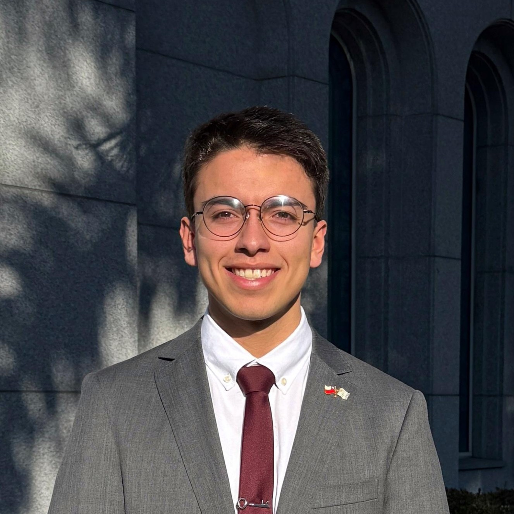

Ezequiel Piccardo | WDD 130
I was born in Uruguay in december 2004, I love learning new skills and share them with the people I love! I am currenly working as an In Field Mentor for new missionaries, and it is awesome to help them fulfill their missionarie porpuse. I have 3 sisters and my parents; two of my sisters are living in UK and the youngest still lives with me and my parents. I am excited to start creating new web pages and use them!